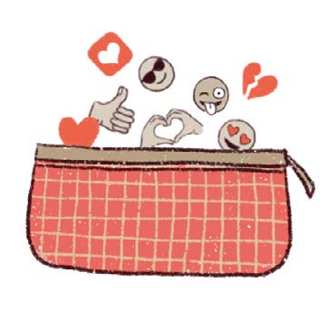
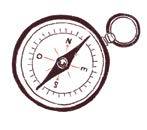
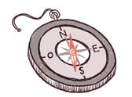
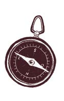
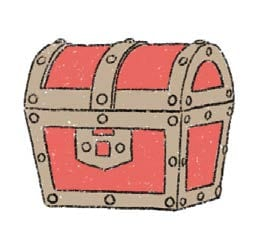

TRES BRÚJULAS
COMPAÑÍA
Los adultos tienen que acompañarte y cuidarte.
Internet es un espacio público, como la plaza.
¿Te dejarían solo en una plaza?
EQUILIBRIO
Entre el tiempo de:
- jugar al aire libre, compartir con seres queridos, bailar, pasear a tu perro, escuchar cuentos, cantar, rascarte la panza, pintar, saltar, pasear, chapotear, trepar…
- y las pantallas.
CONFIANZA
Conversar con libertad sobre lo que te gusta mirar o hacer en Internet. Y pedir ayuda cuando algo te dé miedo, te incomode o no lo entiendas.
UNA
CARTUCHERA
llena de cosas buenísimas para compartir.
UN COFRE VACÍO
para llenar con las curiosidades y los tesoros que descubras.